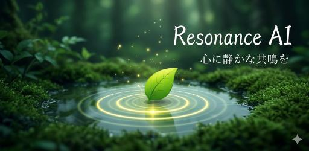
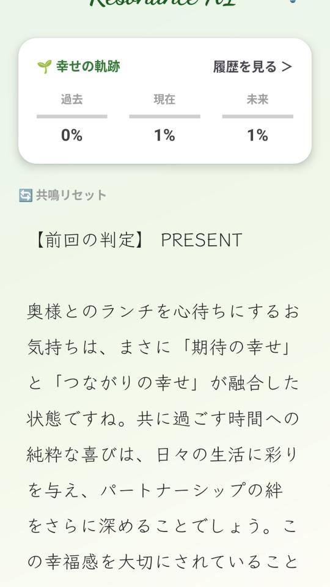
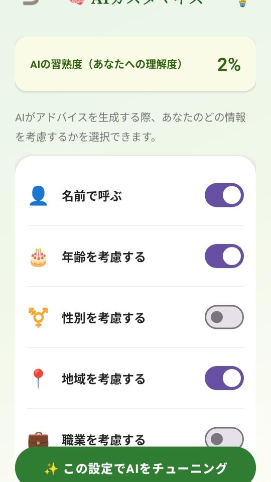
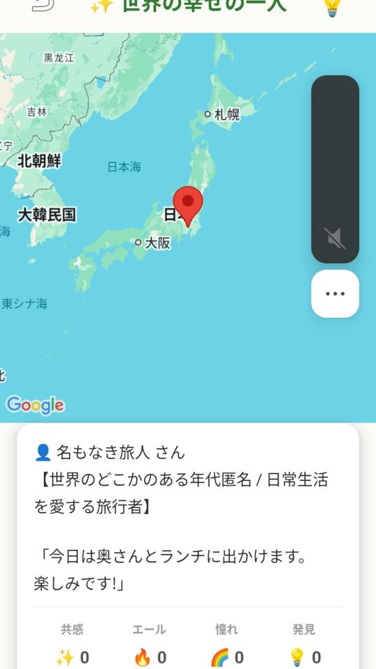

心が安らぐ、明日への道標
あなたの小さな「よかった」を拾い集め、明日の幸せに変える。
心理学と最新AIが融合した、あなただけの専属コンパニオン。
基本プレイ無料・広告なしプランあり

忙しい毎日の中で、自分の心と向き合う時間はありますか？
Resonance AIは、単なるAIチャットボットではありません。
あなたの感情に寄り添い、心理学的な視点から「幸せの軌跡」を分析し、より豊かな明日への道筋を一緒に考えるパートナーです。
日記を書くように、今日あった「小さな幸せ」をAIに教えてください。 AIがその言葉を拾い上げ、優しく受け止め、あなたの心の中にあるポジティブな感情を増幅させます。「今日の幸せを育てる」ボタンから、あなたの新しい旅が始まります。

あなたの入力は「過去・現在・未来」のどのベクトルに向いているのか？ AIが心理学的なアプローチで分析し、「期待の幸せ」「つながりの幸せ」といった具体的な言葉であなたの感情を言語化。客観的に自分を見つめ直すきっかけを与えます。

AIがあなたにアドバイスをする際、名前、年齢、地域、職業などの属性をどこまで考慮するかを自由にカスタマイズ可能。 使えば使うほど「AIの習熟度」が上がり、誰のものでもない、あなただけのコンパニオンへと進化していきます。

あなたの小さな幸せは、世界中の誰かを笑顔にするかもしれません。 完全匿名で表示される「世界の幸せマップ」で、見知らぬ誰かの喜びに触れてみませんか？「共感」「エール」「憧れ」「発見」のリアクションで、優しい感情のネットワークが広がります。

誰かに話すほどではないけれど、確かにそこにあった小さな喜び。
それを言葉にするだけで、自己肯定感は静かに育っていきます。
Resonance AIで、あなただけの「心のオアシス」を作りませんか？
#ResonanceAI #心の癒やし #自己肯定感